Was wo steht
Die Website ist unter www.fwv-raura.ch erreichbar und
braucht keine Anmeldung — bis auf einen Bereich.
Die Startseite trägt alles Wichtige selbst: Über uns, die Termine der nächsten Zeit, die Statuten und zuunterst den Kontakt. Die Einträge oben springen zu diesen Abschnitten, statt eine neue Seite zu öffnen.
Auf eigene Seiten führen:
- Veranstaltungen — die vollständige Liste aller Anlässe mit Suche und Filtern.
- Kalender — dieselben Termine als Monatsansicht, zum Abonnieren.
- Mitglieder beziehungsweise Mein Bereich — der Mitgliederbereich. Nur hier wird eine Anmeldung verlangt.
- Vorstand — wer welches Amt hat.
- Apps — die Programme des Vereins.
Auf den Unterseiten ist die Leiste kürzer und führt zurück auf Home; erreichbar bleibt von dort alles.
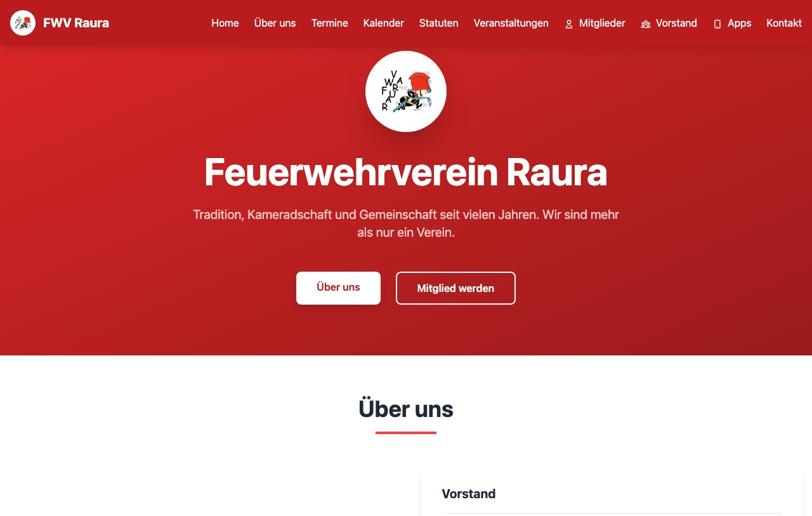
Alle Anlässe auf einen Blick
Unter Veranstaltungen steht jeder Anlass des Vereins untereinander: Titel, Datum, Zeit, Ort und wer ihn organisiert.
Standardmässig sind alle Anlässe eingeblendet. Über die drei Schalter links wechselst du auf Kommende oder Vergangene — Ersteres ist meist das, was du willst. Daneben liegen ein Suchfeld und ein Auswahlfeld für die Kategorie (Dorffest, Aufbau, Vereinsausflug und so weiter).
Ganz rechts schaltest du zwischen der Liste und einer Kachelansicht um. Der Inhalt ist derselbe, nur dichter gesetzt.
Die farbigen Merker an jedem Anlass sagen, woran du bist: Bestätigt heisst, der Termin steht; Helfer gesucht heisst, es fehlen noch Leute für die Schichten; Anmeldung erforderlich heisst, ohne Eintrag geht es nicht.
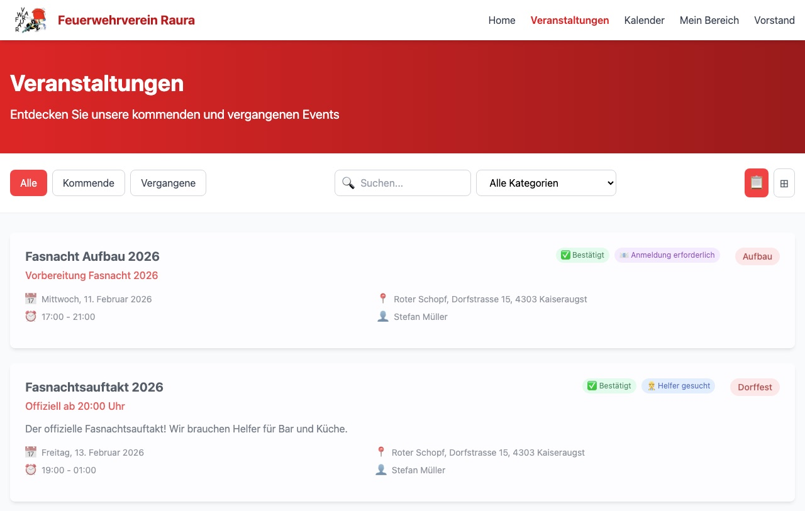
Ein Anlass im Einzelnen
Ein Klick auf einen Anlass öffnet ein Fenster mit allem, was dazu bekannt ist: Termin und Zeit, Ort mit Adresse, Kosten sowie Name und E-Mail des Organisators.
Im Feld Direktlink steht eine Adresse, die genau diesen Anlass öffnet — praktisch, um ihn in einer Nachricht weiterzugeben. Kopieren legt sie in die Zwischenablage.
Unten stehen die Schaltflächen: sich für eine Schicht eintragen, den Arbeitsplan ansehen, oder den Termin in den eigenen Kalender übernehmen.
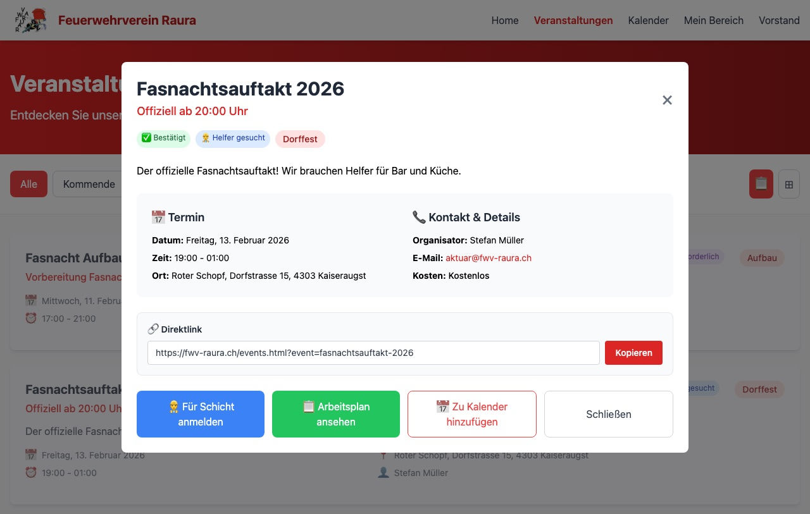
Für eine Schicht eintragen
Bei Anlässen, für die Helfer gesucht werden, führt Für Schicht anmelden zum Formular. Dafür braucht es kein Konto — auch Angehörige und Bekannte können sich so eintragen.
- Name und E-Mail eintragen, Telefon ist freiwillig.
- Unter Schichten auswählen ankreuzen, wann du kannst. Volle Schichten sind als Voll gekennzeichnet und zeigen, wer schon eingeteilt ist.
- Absenden. Du bekommst eine Bestätigung per E-Mail.
Bist du Mitglied, lohnt sich der rote Knopf ganz oben: Als Mitglied anmelden füllt Name und Kontaktdaten aus deinem Profil ein, und die Anmeldung erscheint danach unter Meine Veranstaltungen in deinem Portal.
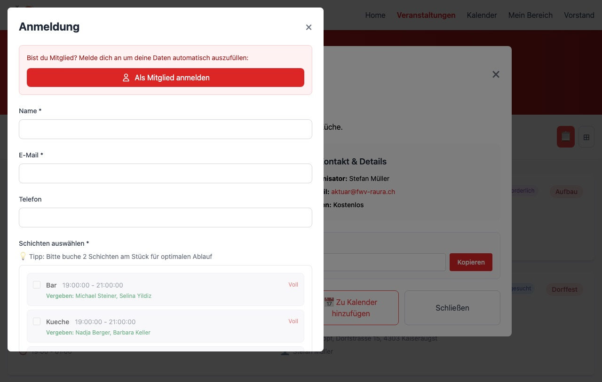
Den Arbeitsplan ansehen
Arbeitsplan ansehen zeigt die fertige Einteilung als Tabelle: links die Zeitblöcke, in den Spalten die Posten — Bar, Küche und was der Anlass sonst braucht — und in den Feldern, wer eingeteilt ist.
PDF herunterladen erzeugt daraus ein Blatt zum Ausdrucken und Aufhängen. Bearbeiten führt weiter auf das Dashboard des Anlasses — dort lässt sich die Einteilung ändern, was aber nur denen offensteht, die den Anlass organisieren.
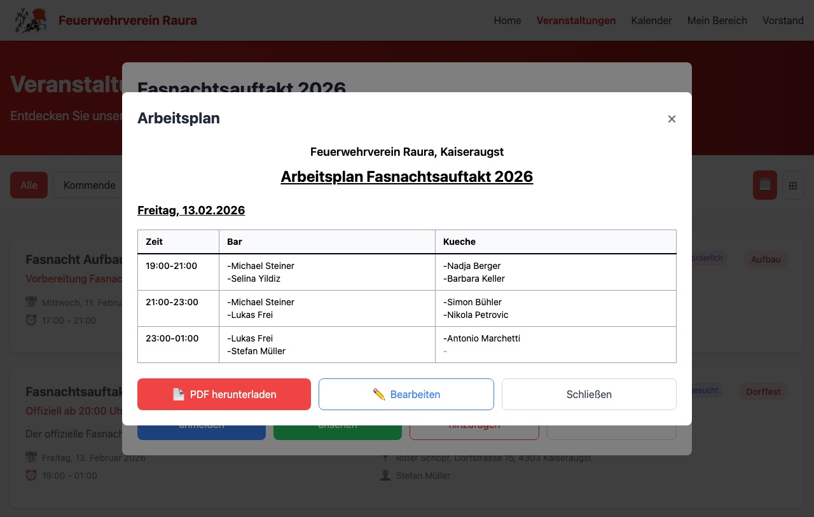
Der Vereinskalender
Der Kalender zeigt denselben Bestand als Monatsansicht. Mit den Pfeilen links neben dem Monatsnamen blätterst du vor und zurück, Heute springt zum laufenden Monat. Im Auswahlfeld rechts lässt sich statt des Monatsrasters eine Listenansicht wählen.
Termine stehen als farbige Balken im jeweiligen Tag. Ein Klick darauf öffnet dasselbe Detailfenster wie auf der Veranstaltungsseite.
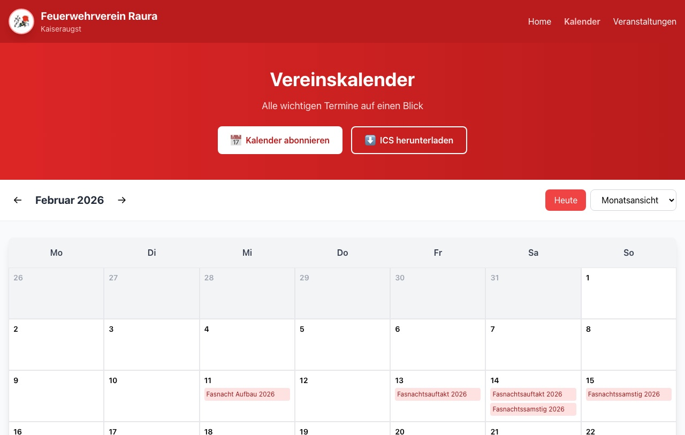
Termine in den eigenen Kalender holen
Statt hier nachzuschlagen, kannst du den Vereinskalender abonnieren: Die Termine erscheinen dann in deinem Kalender am Telefon oder Rechner und aktualisieren sich von selbst, wenn der Verein etwas ändert.
Kalender abonnieren oben auf der Kalenderseite bietet drei Wege an:
- Automatisch — ein Klick, das Gerät öffnet die eigene Kalender-App und fragt nach. Der bequemste Weg.
- Manuelle URL — falls der Klick nichts bewirkt:
webcal://api.fwv-raura.ch/calendar/icskopieren und in der Kalender-App unter „Kalender abonnieren“ einfügen. - ICS-Datei — lädt die Termine einmalig herunter. Sie werden dann nicht mehr aktualisiert.
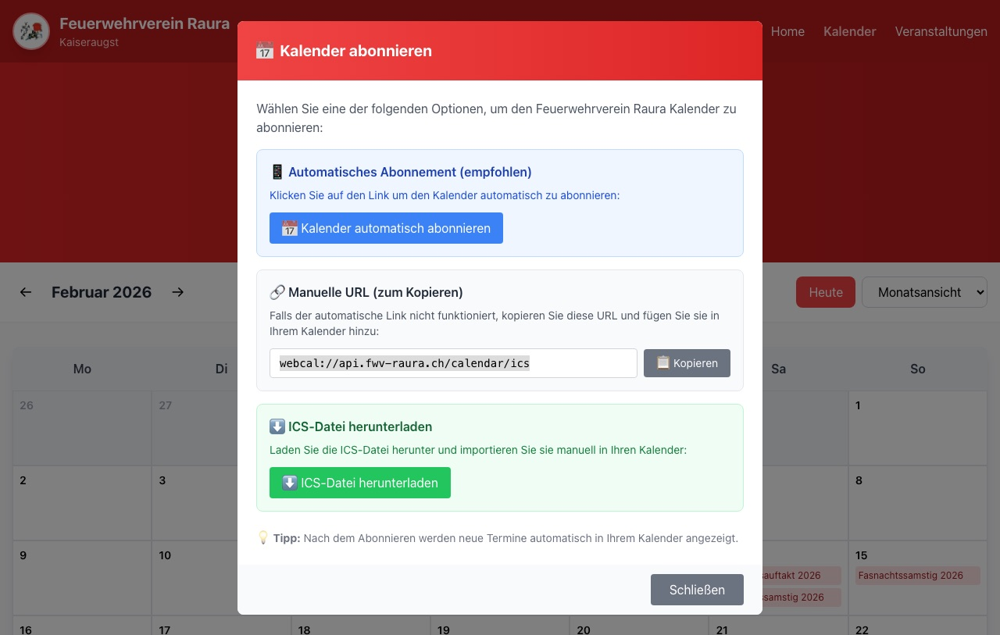
Mein Portal — der Mitgliederbereich
Hinter Mein Bereich liegt der einzige Teil der Website, der eine Anmeldung verlangt. Der Klick führt auf die Anmeldeseite des Vereins; danach landest du wieder auf der Website. Es ist dasselbe Konto wie in der App.
Oben stehen vier Reiter: Mein Profil, Benachrichtigungen, Meine Events und Zugänge — dieselbe Aufteilung wie in der App.
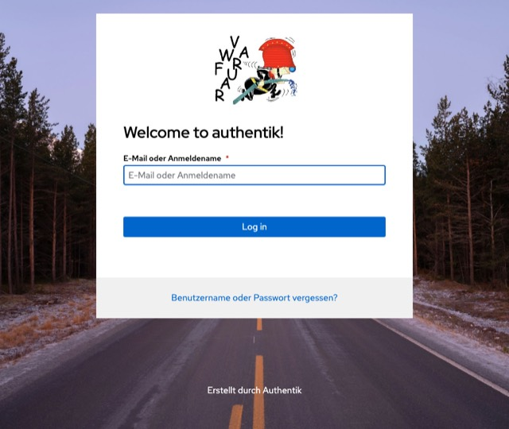
Mein Profil
Ganz oben das Profilfoto, bis 5 MB, als JPG, PNG oder GIF. Darunter die Stammdaten: Vorname, Nachname, Funktion und Status. Die letzten beiden sind grau hinterlegt und lassen sich nicht ändern — die pflegt der Vorstand.
Änderbar sind Kontaktdaten, Adresse und die Bankverbindung — Letztere braucht der Verein für Rückerstattungen. Speichern nicht vergessen; was du hier änderst, gilt auch in der App.
Hast du ein Amt, steht darunter der Block Funktions-E-Mails: die Adresse, ein Feld zum Ändern des Passworts, die Servereinstellungen für ein Mailprogramm und der Knopf zum Webmail.
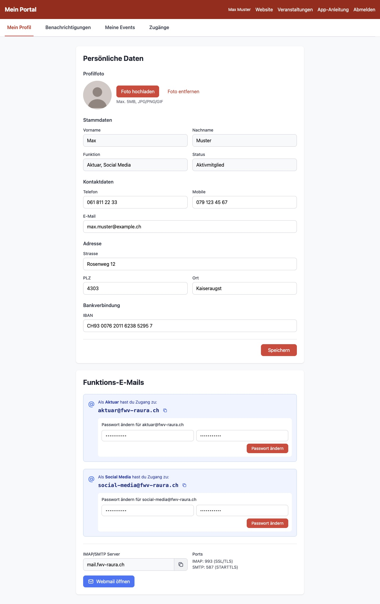
Benachrichtigungen
Vier Arten von E-Mails lassen sich einzeln ein- und ausschalten: Änderungen an Anlässen, allgemeine Vereinsmitteilungen, der monatliche Newsletter und Erinnerungen an anstehende Schichten.
Zu jeder Art kannst du eine abweichende Adresse angeben — etwa die Funktionsadresse für Vereinsmitteilungen und privat für die Schicht-Erinnerungen. Bleibt das Feld leer, geht alles an die Adresse aus deinem Profil.
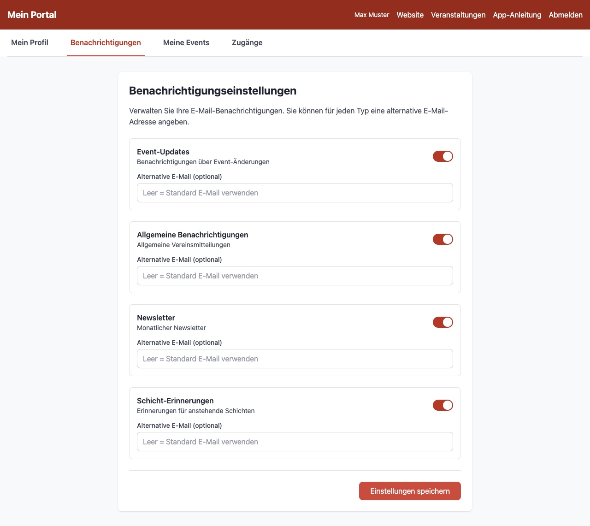
Meine Events
Jede Anmeldung, die du je abgeschickt hast, mit Datum und Status: Bestätigt heisst, du bist eingeteilt; Abgelehnt heisst, es hat für diesen Anlass nicht gereicht oder du hast wieder abgesagt.
Hast du dich für Schichten eingetragen, stehen sie unter Deine Schichten aufgeführt — mit Nummer, Tag, Zeit und Posten. So siehst du auf einen Blick, wann du wo eingeteilt bist.
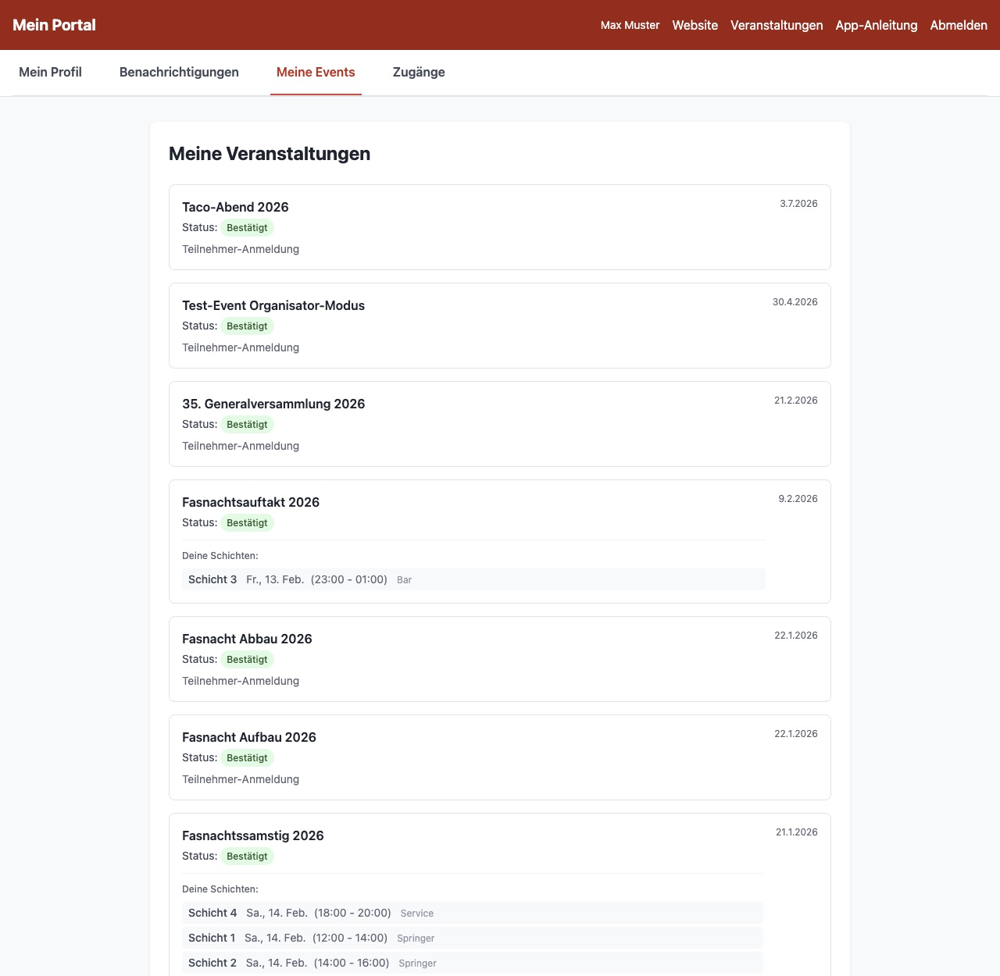
Zugänge
Der Reiter sammelt alles, womit du dich anderswo anmeldest:
- Funktions-E-Mails — Adresse, Passwort und Serverdaten. Zeigen macht das Passwort sichtbar, Kopieren legt es in die Zwischenablage.
- Nextcloud Gruppenordner — die Ablagen, auf die deine Funktion Zugriff hat.
- Gemeinsame Zugänge — Logins, die sich mehrere teilen, etwa für die Kasse oder die Küchenanzeige. Diese Passwörter werden automatisch alle sieben Tage gewechselt; hier steht immer das gültige, samt Datum der nächsten Rotation.
- System-Zugänge — eine Übersicht, welche Systeme des Vereins dir offenstehen, mit Direktlink.
Organisierst du einen Anlass, kommt Events als Organisator dazu: der Link auf das Dashboard des Anlasses und die Zugangsdaten dafür — eine eigene E-Mail-Adresse mit Ablaufdatum. Das Passwort dazu kam per E-Mail, als du als Organisator eingetragen wurdest.
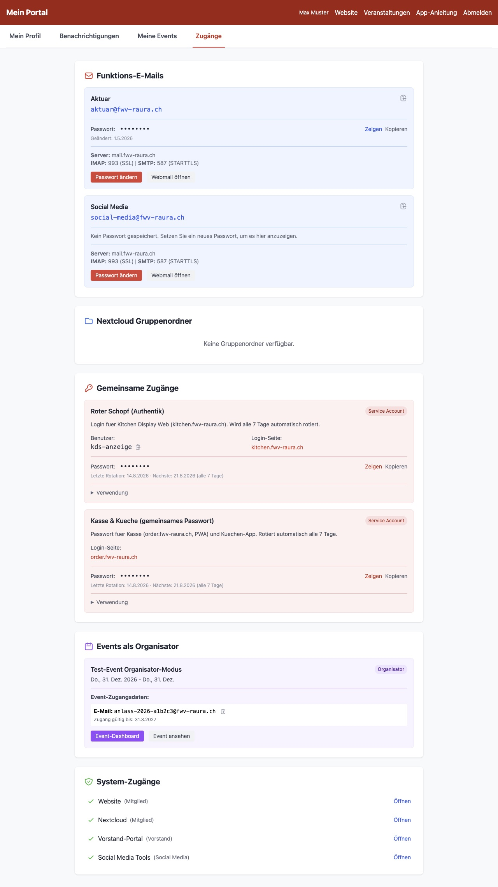
Die Apps
Unter Apps liegen die Programme des Vereins zum Herunterladen — die Mitglieder-App für Android sowie die Werkzeuge für den Vereinsbetrieb, etwa die Küchenanzeige.
Was in der Mitglieder-App steckt und wie sie eingerichtet wird, steht in der eigenen App-Anleitung.
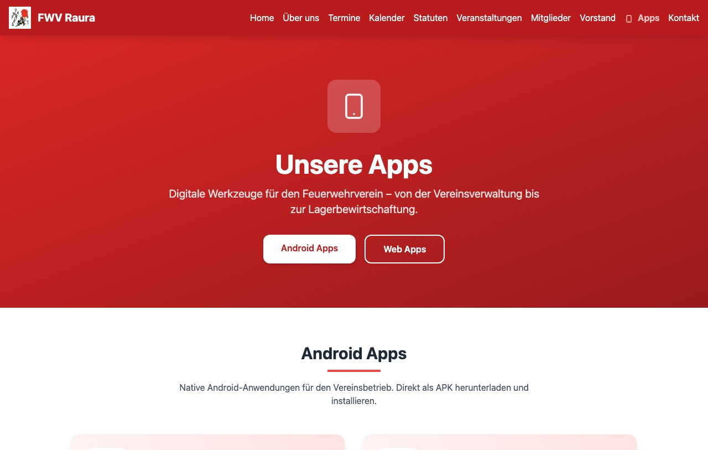
Fragen, Anliegen, Mitglied werden
Ganz unten auf der Startseite steht das Kontaktformular. Im Feld Betreff auswählen gibt es neben der allgemeinen Anfrage auch den Punkt für eine Mitgliedschaft — wählst du den, erscheint statt des Nachrichtenfelds ein Formular mit den Angaben, die der Verein für eine Aufnahme braucht.
Daneben stehen die Postadresse des Vereins, die allgemeine Adresse
kontakt@fwv-raura.ch und der Aktuar als direkter
Ansprechpartner.
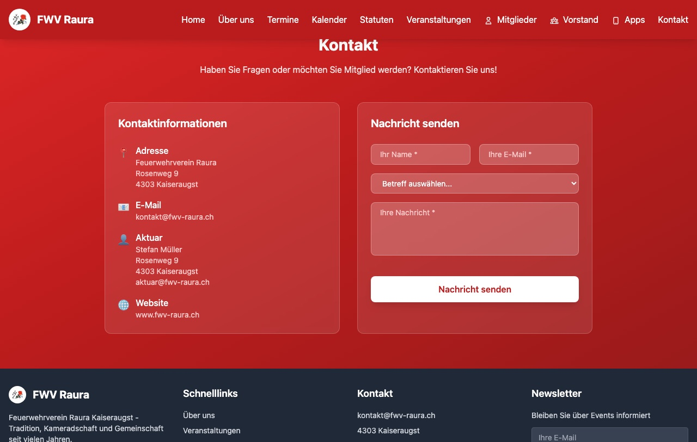